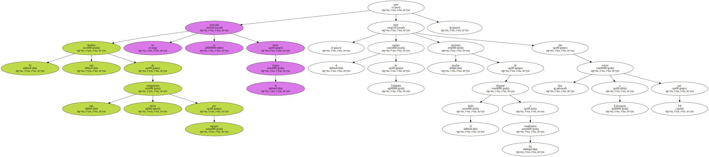

El equipo surafricano , formado por Amanda Coetzer y Wayne Ferreira , se clasificó para disputar la final de la Copa Hopman de tenis pese a perder hoy ante el de Estados Unidos por 2-1.

El otro finalista de esta competición mixta por equipos no se conocerá hasta el viernes , pero el equipo de Tailandia tiene muchas opciones de disputar el título a los surafricanos tras vencer hoy a Eslovaquia por 3-0.
